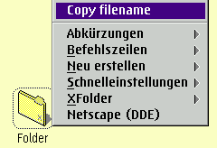

Wenn Sie "Dateinamen kopieren" ausw„hlen, ohne dabei die Umschalt-Taste gedrckt zu halten, kopiert &xwp; nur den reinen Dateinamen. Wenn Sie die Umschalt-Taste gedrckt halten, w„hrend Sie "Dateinamen kopieren" ausw„hlen, kopiert &xwp; den voll qualifizierten Dateinamen, d.h. den Laufwerksbuchstaben, den Pfad und den Dateinamen selbst.
Angenommen, der Ordner im obigen Bild liegt auf der Arbeitsoberfl„che, so wrde "Dateinamen kopieren" die Zeichenkette "C:\Arbeitsoberfl„che\Ordner" in die Zwischenablage stellen, wenn Sie die Umschalttaste gedrckt halten, ansonsten lediglich "Ordner".
Dies funktioniert jetzt (V0.80) auch dann, wenn Sie mehr als ein Objekt im Ordner ausgew„hlt haben. In diesem Fall werden die Dateinamen aller ausgew„hlten Objekte in die Zwischenablage kopiert, getrennt durch Leerzeichen.
&xwp; definiert jetzt auch Strg+Einfgen als Standard-Ordner-Tastenkrzel, um die Dateinamen der momentan ausgew„hlten Objekte in die Zwischenablage zu kopieren.
Sie k”nnen in den Globalen Einstellungen den Meneintrag abschalten und die Tastenkrzel dafr neu definieren.